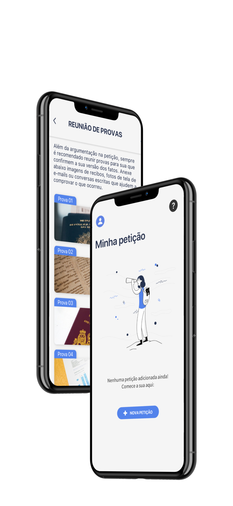
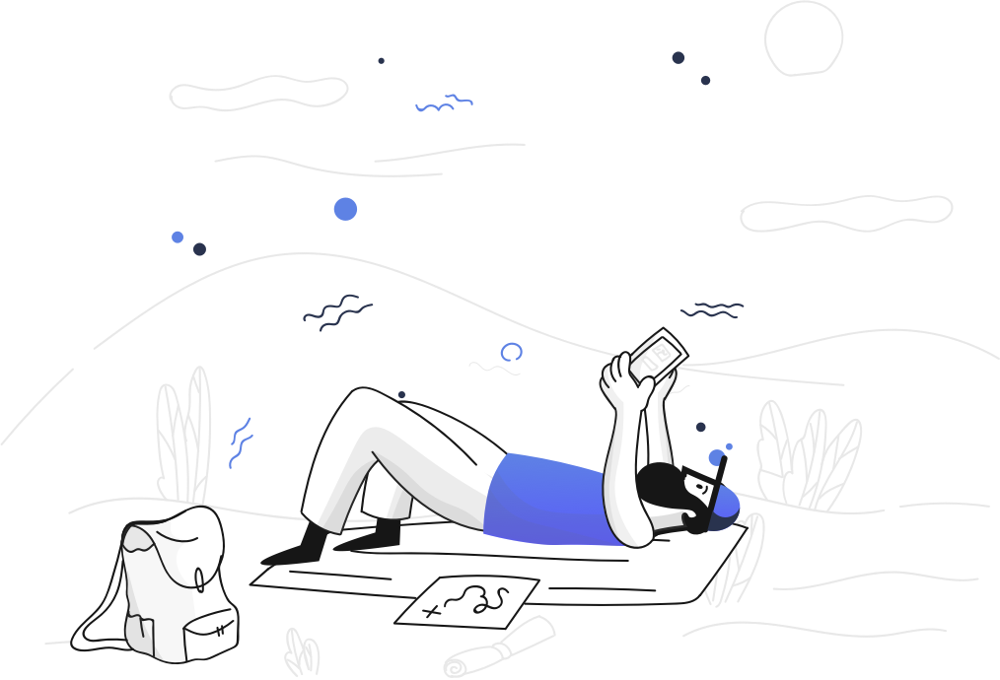
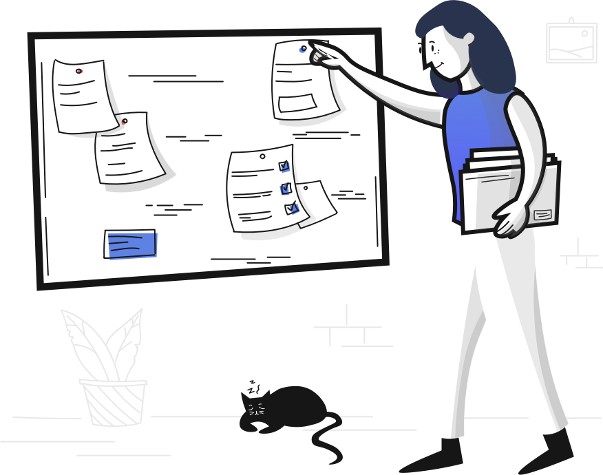
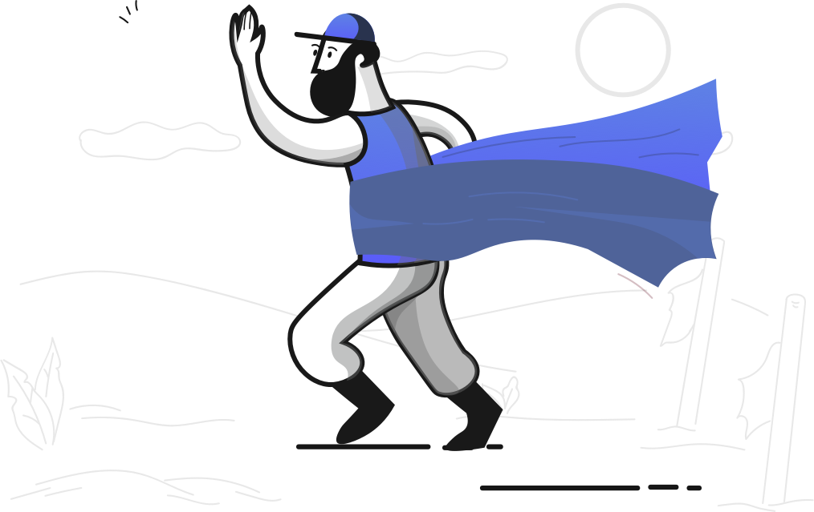

Você sabia que milhões de brasileiros procuram o Juizado Especial todos os anos para exigirem seus direitos?
É fácil, rápido e não precisa de advogado

Um app na mão e mais tranquilidade na cabeça
Monte uma petição bem organizada e formatada na hora. Você coloca todas as informações no celular e pode
exportar sua petição em pdf para imprimir ou mandar virtualmente ao Juizado Especial Cível da sua
cidade.

Prepare as provas com clareza e facilite seu entendimento
No app você organiza a exibição das imagens que vai usar como prova no seu pedido ao juiz e as
apresenta de forma clara e objetiva.

Mais confiança na hora de ir à audiência
Além de te auxiliar quando vai montar a petição, o app Justina apresenta boas dicas práticas para você
se sentir mais habilitado para o momento da audiência de conciliação
Criando seu processo em Pequenas Causas com a Justina
 Baixe o aplicativo Justina no seu celular
Baixe o aplicativo Justina no seu celular
Crie sua primeira petição preenchendo o formulário da Justina. Pode deixar que
ela cuida da formatação e modelo final da sua petição.
Assim que a petição estiver pronta em formato PDF, você pode enviá-la para seu
e-mail de preferência ou por AirDrop para seu computador.
Com a petição em mãos, você pode levá-la para o Juizado Especial mais próximo
e esperar a data da audiência :)